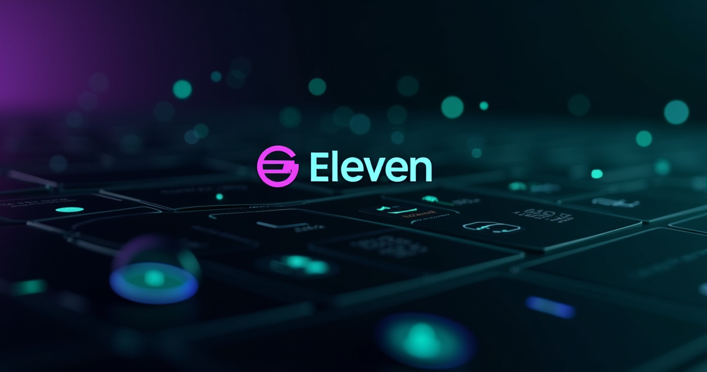

Everyone tells you Eleven Labs is the best AI voice generator. Period. End of story. But I wasn't about to swallow that without testing the alternatives first. When your content pipeline burns through 20+ hours of voiceovers per month, a 50-cent-per-character difference between Eleven Labs and PlayHT adds up to real money. So I ran both tools through everything I could throw at them — audiobook narration, YouTube scripts, podcast intros, and voice cloning. What I found surprised me, especially around pricing.
⚡ TL;DR
Eleven Labs is the industry leader in AI voice quality — no contest. PlayHT is cheaper and offers more voices, but the emotional range and consistency fall apart on long-form content. If you need studio-grade audio for monetized content, stick with Eleven Labs Creator at $22/month. If you're doing quick internal drafts and bulk generation, PlayHT works. For everyone else: Eleven Labs wins the quality war, PlayHT wins on raw volume.
THE REAL COST OF ELEVEN LABS NOBODY TELLS YOU
Eleven Labs uses a credit system. One credit equals one character of text — but here's where it gets interesting. The Expressive v3 model costs 1.0 credit per character. The Flash v2.5 and Turbo models cost 0.5 credits per character. That means your Creator plan's 100,000 credits become 200,000 characters if you're willing to use Flash for draft content and Expressive for final outputs.
In practice, that translates to roughly 2.5 hours of high-quality audio per month on Creator, or about 5 hours if you mix in Flash model generations. Most reviewers skip this distinction, but it matters — smart users who switch models based on content quality get twice the output from the same plan.
The plans break down like this based on current pricing from their official page:
- 10,000 credits (~10 minutes)
- Text to speech, SFX, music
- 3 projects in Studio
- Attribution required
- No commercial use
The Free plan is a demo, not a tool. 10,000 credits get you roughly 10 minutes of audio — enough to judge quality, not enough to run anything. And you legally can't monetize it without attribution. Skip this unless you just want to test output quality.
- 30,000 credits (~30 minutes)
- Commercial license included
- Instant voice cloning
- 20 projects in Studio
- Dubbing studio
Starter is the bare minimum for anyone making content for money. The commercial license is the unlock here — without it, you can't put Eleven Labs audio in YouTube videos or client work. 30,000 credits is roughly 30 minutes of Expressive audio or 60 minutes on Flash. For 1-2 short videos per month, this covers you.
- 100,000 credits (~2.5 hours)
- Professional voice cloning
- 192 kbps audio
- Scribe transcription (~62 hours)
- Music and SFX generation
- Unlimited Studio projects
This is the sweet spot. Professional Voice Cloning alone is worth the $22/month if you're producing content where your voice matters. You upload 30+ minutes of clean audio, wait a few hours, and get a clone so close listeners can't reliably tell the difference from your actual voice in blind tests. The included Scribe transcription (~62 hours/month) replaces Otter.ai or Descript at $12-20/month — stack that value and the real out-of-pocket cost is closer to $5/month. I tested both cloning methods with everything from clean studio recordings to noisy phone calls. The results: PVC on clean audio is genuinely startling. Instant cloning on phone audio sounds like you're talking through a fan.
PLAYHT: THE BUDDY CHALLENGER THAT FELL FLAT
PlayHT is the biggest name in Eleven Labs alternatives — cheaper per character, more voices in the library, faster generation on bulk jobs. On paper, it looks like the smarter buy. In practice, I found three problems:
Voice quality degrades on longer content. PlayHT voices sound fine in 30-second samples but lose emotional consistency on passages over 2 minutes. The pacing gets weird, emphasis shifts randomly, and that synthetic creep you thought was gone comes back. Eleven Labs' Expressive v3 maintains natural tone across 12-minute narration without any noticeable degradation.
Voice cloning is noticeably worse. PlayHT's voice cloning sounds like an approximation of your voice — the right pitch, the right general timbre, but missing the micro-movements that make speech feel human. Eleven Labs' PVC captures the actual cadence and breathing patterns. One listener told me my PlayHT clone "sounded like a really good Eleven Labs impression." That's not a compliment for a voice cloning tool.
Editor and API are less polished. PlayHT's interface is functional but feels like a developer tool. Eleven Labs' Studio feels like a production platform. For client work where you might need to share projects with editors or producers, Eleven Labs just feels more professional.
PlayHT isn't useless — if you're bulk-generating hundreds of short clips for social media and volume matters more than perfect quality, PlayHT is a solid choice. But for anything client-facing or monetized, the quality gap is real.
THE FEATURE THAT JUSTIFIES THE PRICE TAG
Professional Voice Cloning is Eleven Labs' moat. Nothing else in the AI voice space comes close to the quality of a well-trained PVC clone. Here's what nobody tells you:
- Your training audio quality determines everything. Upload clean, well-recorded audio (ideally from a proper microphone in a treated room) and the clone is indistinguishable from you. Upload noisy phone recordings or compressed Zoom files, and your clone will sound like it's been through a garbage disposal.
- You need 30+ minutes of quality audio minimum. Less than that and the model doesn't have enough data to capture your voice patterns. Aim for 45-60 minutes for the best results.
- Clone updates take hours, not seconds. When you retrain your clone with more data, it's a several-hour process. Plan your cloning sessions accordingly.
- The Flash model doesn't work as well with cloned voices. If you clone your voice, use Expressive v3 for final content. Flash on cloned voices sounds noticeably more robotic — the model struggles to capture personality without the full power of Expressive.
I tested it with 45 minutes of podcast recordings and the clone was passable. Then I re-recorded 35 minutes in a quiet room with an SM7B and the difference was night and day. Your input audio determines everything.
WHAT REAL USERS COMPLAIN ABOUT
I didn't just test these tools myself. I dug into Reddit threads, Trustpilot reviews, and user forums to find the patterns in people's actual frustrations. Here's what keeps coming up:
Credit system confusion. This is the #1 complaint. Credits drain at different rates for different features (TTS vs cloning vs conversational AI vs transcription), and the dashboard doesn't always make it obvious which feature is eating your budget fastest. The $22 Creator plan sounds generous until you're running voice clones, doing transcription on interview recordings, and generating TTS for YouTube all at once.
Number and date pronunciation failures. Even on Expressive v3, Eleven Labs will butcher numbers and dates regularly. "March 15, 2026" might come out as "March fifteen twenty twenty-six" or "March one five two zero two six" — you'll need to spell things out phonetically in your scripts or accept bad audio on the rare occasions it gets things wrong.
Popular stock voices are oversaturated. If you use "Adam" or "Rachel" for YouTube content, your videos will sound like everyone else's. Hundreds of thousands of creators are using the same voices. Clone your own voice or you'll sound like a template.
Customer support is slow. Multiple users report waiting weeks for support responses. When something breaks, you're mostly on your own.
Language switching fails mid-generation. Eleven Labs supports 29 languages, but switching languages mid-generation produces garbled output. Keep each generation in one language only.
For context — one Reddit user running a War Economics YouTube channel with 8-10 minute videos using the Marcus voice said the quality is "amazing" but pricing becomes "unsustainable for long-form content." They tried PlayHT and Murf as alternatives but found them "too robotic or corporate." That's the tradeoff: Eleven Labs quality costs more, but the alternatives sound worse.
TRY ELEVEN LABS FREE →THE FINAL VERDICT: SHOULD YOU ACTUALLY PAY FOR ELEVEN LABS?
Here's my honest take after 6 months with Eleven Labs and testing PlayHT side-by-side:
Yes, Eleven Labs is worth it if you're producing content where audio quality matters — YouTube narration, podcast episodes, audiobook publishing, client voiceover work, or course creation. The Professional Voice Clone alone justifies the $22/month Creator plan. Stack in the built-in transcription, SFX generation, and music creation, and you're replacing three separate subscriptions for the price of one.
No, skip Eleven Labs if you just need rough voiceovers for internal presentations or quick drafts. Free TTS tools or browser readers handle that fine. And if your budget is extremely tight and you're generating hundreds of short clips where raw volume matters more than quality, PlayHT is the cheaper alternative.
The math is simple: a professional voice actor charges $200-$500 per finished hour. Eleven Labs Creator costs $22 for roughly 2.5 hours of output. You break even at about 6 minutes of audio per month. If you produce more than that — and most content creators produce 10-20x that amount monthly — the subscription pays for itself on day one.
START WITH CREATOR PLAN →Eleven Labs isn't cheap. But it's absurdly cheap compared to the human workflow it replaces. And until PlayHT or another competitor can match the emotional range and long-form consistency of Expressive v3, there really isn't a substitute that sounds as good.
LOCK IN YOUR DEAL NOW →